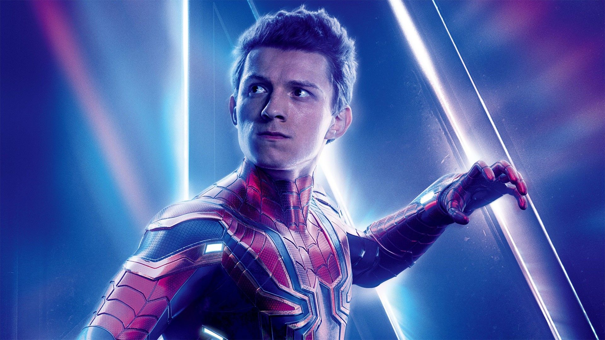
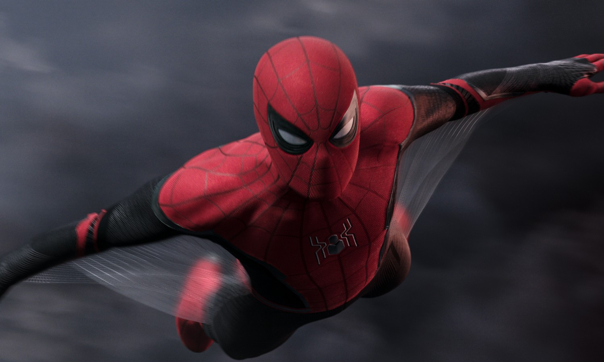
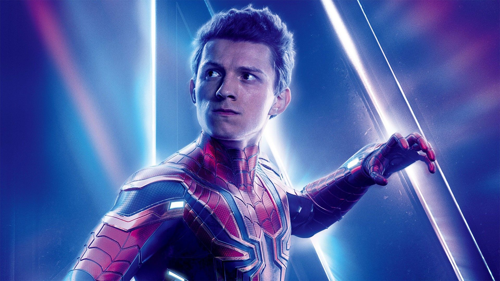
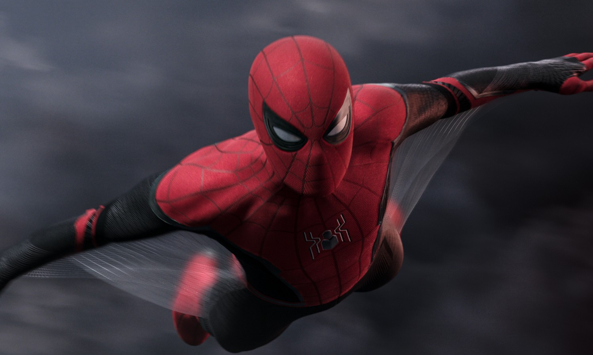

My favourite character- Spider-man
Some images of Spider man-
 



I liked Spider-man since my childhood. I first watched Spider-man in the Sam Raimi Spider-man trilogy and I really liked Spider-man and I became a fan of him. Then I read books of Spider-man, watched cartoons of him. Then I bought action figures and many stuff of Spider-man. Then in the last year I began watching Marvel movies aka MCU. I watched Spider-man Far From Home in 2019. But I didn't understand it then I watched all the marvel movies and I am a mad and a biggest fan of MCU also I watch all thier series including- Wandavision, The Falcon And The Winter Soldier, and I am watching Loki nowadays. I saw Spider-Man in Captain America: Civil War and I was shocked, Then I watched Spider-Man: Homecoming and my craze of Spider-Man increased. I like the Marvel Spider-Man more because it has more technology and many features compared to the Sam Raimi Trilogy. I am waiting for Spider-Man no way home and I keep all the updates for it. I really love Spider-Man.